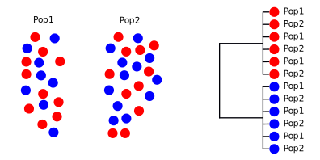

Multi-locus phylogenetics
BNS-2002: Genes, Development, and Evolution
Dr Axel Barlow
email: a.barlow@bangor.ac.uk
Phylogenetics and population genetics lectures
- Key concepts and Single locus phylogenetics
- Multi-locus phylogenetics
- Theory
- Methods
- Discoveries
- Population structure
- Conservation genetics
Multi-locus phylogenetics - theory
How does the tree form: lineage sorting

How does the tree form: lineage sorting

How does the tree form: lineage sorting

How does the tree form: lineage sorting

How does the tree form: lineage sorting

Lineage sorting summary
- Drift sorts the lineages into clades
- This takes time, we can't detect the divergence immediately
- We go through stages of complete/incomplete monophyly
- incomplete to complete lineage sorting
- lineage sorting is faster when the population size is small (= more drift)
- Mutation builds upon the clades, monophyly is retained [unless there is gene flow]
- ILS can be a real problem for inferring relationships, especially in large populaitons with recent divergence events

Relying on a single locus tree could be misleading
- Incomplete lineage sorting could mean that clades do not correspond to species/populations
- Old divergence with small populations less likely to cause problems
- But no way of easily predicting/testing this from a single tree
- Also may fail to account for sex-specific differences (e.g. mtDNA and Y chromosome)
Solution: multiple loci
- Increased statistical confidence
- Can detect sex-specific differences
- Can also quantify ILS (says something about pop size and divergence time)
- Potential to study gene flow [more later]
Multi-locus phylogenetics - methods
Getting the data
Modest number of loci
- Several PCRs
- Transcriptomes
- Hybridisation capture
- Ultraconserved elements
- Exomes
Whole genomes
- de novo assembly and whole genome alignment [hard]
- shotgun whole genome resequencing
Shotgun whole genome sequencing

Mapping to reference genome assembly
- Whole sample DNA is sequenced in short reads
- These are "mapped" to a reference whole genome sequence based on similarity
- Nuclear chromosomes
- Mitochondrial/chloroplast genomes
- Potentially other genomes too (bacteria, pathogens, etc.)
- Around £200 for a 2-3Gb genome, currently
Data analysis
Separate loci
- Analyse each locus separately, look for concordant patterns
- Combine all together (concatenation)
- More complex models, e.g. multispecies coalescent
Whole genome
- Concatenation easy
- Divide chromosomes into non-overlapping chunks (very approximate)
- not based on actual recombination points
- mostly the diploid alleles are not phased
- in practise works very well
- More sophisticated methods that identify the true breakpoints between loci
Multi-locus phylogenetics - discoveries
Brown bear and polar bears

- Brown bears not monophyletic
- Divergence time ~120 Ka
- Incomplete lineage sorting (result of recent speciation)?
- Something else?
- Multiple divergent brown bear clades
- Evidence of glacial refugia
Brown bear and polar bear Y chromosome

Brown bear and polar bear autosomes

- mtDNA suggests recent speciation and brown bear glacial refugia
- Y chromosome suggests species monophyly, no evidence of brown bear refugia
- Autosomes show species monophyly, and that the species are OLD (latest estimates, 1 million years)
Explanation
- The 2 species are old and distinct
- Males move about more than females
- More recent mtDNA divergence suggests gene flow
Detecting gene flow
Speciation with complete lineage sorting

Speciation with complete lineage sorting

Speciation with complete lineage sorting

Speciation with complete lineage sorting
Speciation with complete lineage sorting
What if lineage sorting is incomplete?
Speciation with incomplete lineage sorting
Speciation with incomplete lineage sorting
Speciation with incomplete lineage sorting

Speciation with incomplete lineage sorting

Or...
Speciation with incomplete lineage sorting
Speciation with incomplete lineage sorting

Simulator
Summary
- [Note these a just some of the many outcomes you could imagine]
- The danger zone is when alleles fail to reach fixation early in the speciation process
- i.e. prior to brown bear population divergence in the example
- Because there is no selection for specific alleles, the process is random
- Either brown bear population may end up grouping with the polar bears
What can you predict about the relative frequencies of these alternatives?
Expected tree frequecies under ILS?
What about gene flow?
Speciation with complete lineage sorting
Speciation with complete lineage sorting

Speciation with complete lineage sorting

Expected tree frequencies with gene flow?
Summary
- An inbalance in the non-species tree topologies provides evidence of gene flow
- Only works if you have sequenced a LOT of loci (whole genomes)
- Can detect very ancient events
- And sex-biases (e.g. X chromosome vs. autosome)
- Sometimes based on SNPs (D statistics, F-ratio statistics), essentially the same
- Revealed many examples of gene flow in the past decade
Brown bear and polar bears
Nuclear genomes, 100 kb windows

Brown bear and polar bear reading
Brown bear and polar bear reading
Cave bears and brown bears
- Cave bears are sister lineage to brown bears and polar bears
- Giant vegan bears
- Extinct ~25 Ka
- Lived alongside brown bears for most of their evolutionary history


Cave bears and brown bears
Nuclear genomes, 25 kb windows

Cave bear reading
Neanderthals and anatomically modern humans
- Extinct population of humans
- Extinct ~40 Ka
- Basically a human (many morphological characters overlapping)
- Advanced culture, hunting technology, art, etc.
- Major dispersal of anatomically modern humans 70-50 Ka
- Population replacement or admixture?

Neanderthals and anatomically modern humans

[SNP based analysis, but essentially the same]
Neanderthal reading
Bengal cat

- Hybrid domestic cat/Prionailurus bengalensis
- F1 hybrids backcrossed 6+ generations
- Selection for coat pattern and other introgressed traits
- A framework to better understand the process and refine methodologies???
Looking for an MSc project???
Next time
Population structure